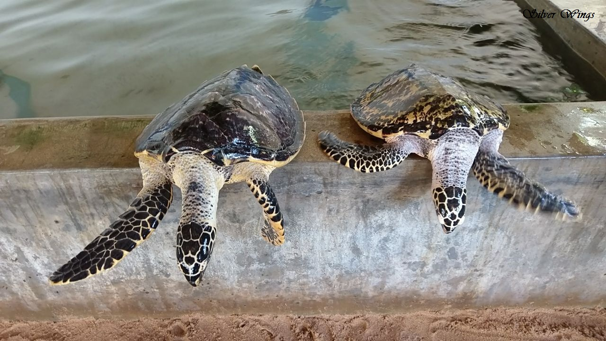

Conservation Education And Release Of Hatchings
Conservation Education

Kosgoda Turtle Hatchery promotes sea turtle conservation through educational sessions, educating visitors on life cycles, dangers, and conservation techniques.
Release Of Hatchings
Visitors witness newborn turtles hatching, a crucial stage on their journey to maturity.
Rehabilation Of Injured Turtles
Rehabilation Of Injured Turtles
Kosgoda Turtle Hatchery treats injured sea turtles from fishing nets, boat collisions, and human actions until healthy enough release.